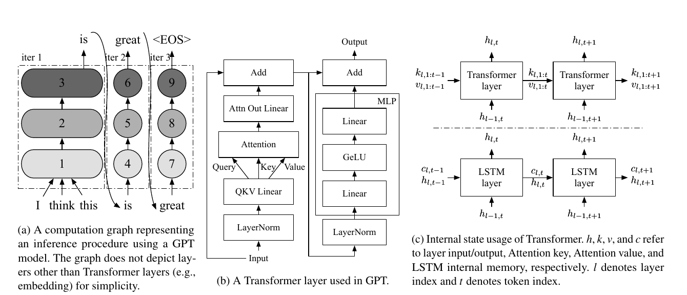
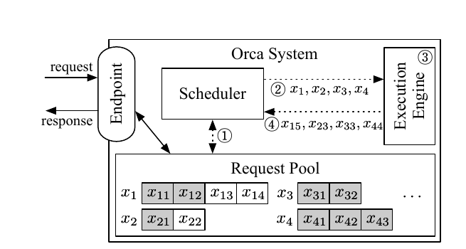
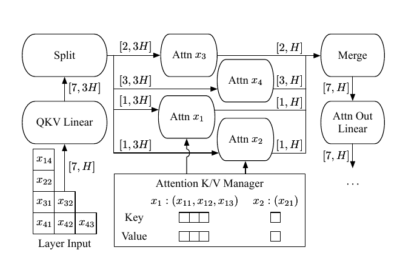
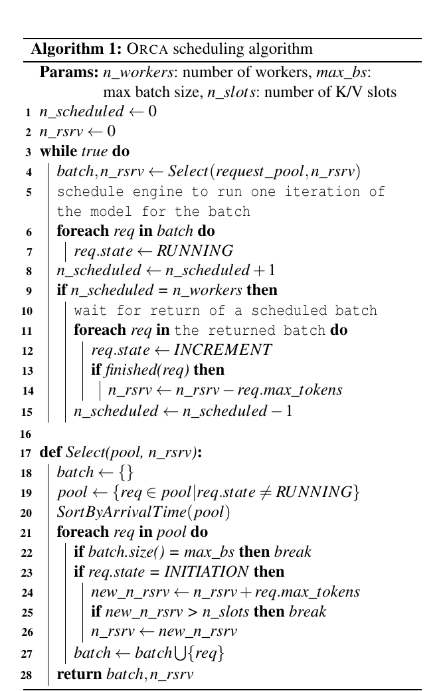
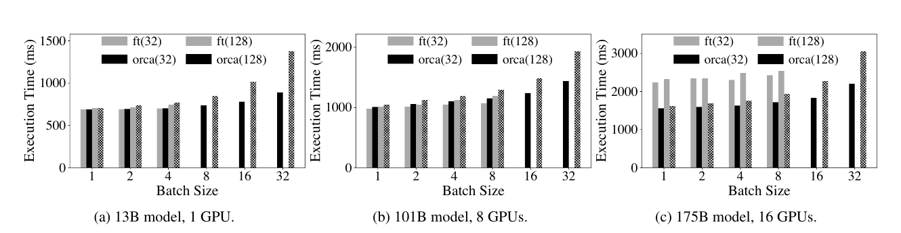
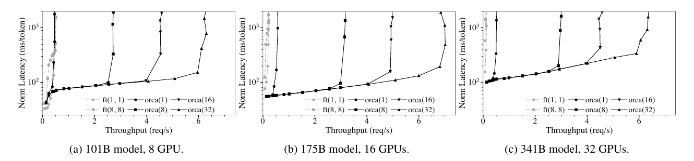
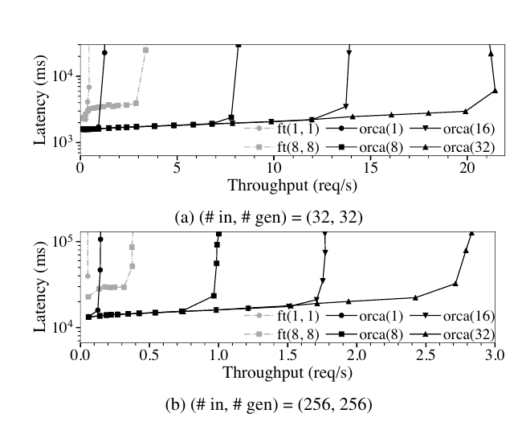

Orca: A Distributed Serving System for Transformer-Based Generative Models
ORCA 把自回歸生成的排程單位由「整個請求」縮小到「一次模型迭代」，再以選擇性批次（selective batching）保留異質序列的 GPU 效率；在 175B GPT 合成負載、約 190 ms/token 中位延遲下，吞吐量由 FasterTransformer 的 0.185 req/s 提升至 6.81 req/s（36.9×）。 §6.2 · PDF p.13（論文標示 p.532）· Figure 10
文章目錄
自迴歸迭代、KV 歷史與模型平行的最低背景
只需要四個前置概念
| 概念 | 本文中的意思 | 稍後用在哪裡 |
|---|---|---|
| 自回歸迭代 | 一次 iteration 跑過全部 Transformer layers 並產生一個 token；首輪 initiation 可並行處理全部輸入 token，後續 increment 每輪吃前一個輸出 token。 | 解釋為何一個請求有多個可重新排程的邊界。 |
| 增量解碼與 K/V 狀態 | 第 (t) 個 token 的 Attention 會重用先前 token 的 key/value；狀態隨 token 數增長，且不同請求的張量長度可不同。 | 解釋 selective batching 與 K/V slot 預留。 |
| GPU 批次 | 把多請求輸入合併可放大矩陣運算、提高平行度，並讓一次載入的模型參數服務更多 token。 | 解釋為何不能單純把請求逐一執行。 |
| 模型／管線平行 | intra-layer 切矩陣，inter-layer 切 layer；多個 worker 依序處理模型分區。 | 解釋 ORCA 如何支援 175B／341B 與保持 pipeline 滿載。 |
Figure 1 把前兩項串起來：initiation 一次處理多個輸入 token；increment 逐 token 前進；Transformer 的 K/V 歷史會增長，而 LSTM 的 recurrent state 大小固定。 §2 · PDF p.4（論文標示 p.523）· Figure 1
批次之所以重要，不只因為「更多執行緒」：對大模型的線性層，權重從 GPU global memory 載入常是關鍵成本；同一輪讓更多 ready token 共用權重讀取，才是作者在相關工作討論中明示的設計原則。 §7 · PDF p.14（論文標示 p.533）
分析 以上概念形成本文的矛盾：服務層若只看「整個請求」，反應太慢；若每個 token 都單獨跑，GPU 又太低效。下一節因此要找一個同時允許細粒度 admission／retirement 與粗粒度權重重用的執行單位。
{kind=link}

有了這些背景，下一個問題是：固定批次為何被不同長度、Early Finish 與記憶體預留拖垮
固定批次為何被不同長度、Early Finish 與記憶體預留拖垮
症狀 → 根因 → 既有方法缺口
- 可觀察症狀：同批中的短請求已完成卻不能回傳；其 batch slot 仍可能做額外運算；批次執行期間新到請求只能排隊。 §3 C1 · PDF p.5（論文標示 p.524）· Figure 3
- 根因：serving scheduler 將整批請求一次交給 engine；engine 內部完成所有請求的全部 iteration 才回傳，服務層無法在中途改變 batch membership。
- 直接改成 iteration 排程仍不夠：不同請求可能位於 initiation／increment 的不同階段、輸入長度不同、K/V 歷史長度不同；傳統 ([B,L,H]) 批次要求相同 (L)，所以 arbitrary ready set 無法整層 batch。 §3 C2 · PDF p.6（論文標示 p.525）
- 最近的前作仍不足：BatchMaker 能合併計算相同的 RNN cells；Transformer 在每個 token index 使用不同 K/V 集合，等價 cell 種類太多，且該系統不支援本文需要的大模型／pipeline parallelism。 §7 · PDF p.14（論文標示 p.533）
由限制推導出的需求
| 需求 | 成功條件 | ORCA 對應設計 |
|---|---|---|
| R1 細粒度反應 | 最遲在目前 iteration 後讓新請求加入、完成請求離開。 | Iteration-level scheduling。 |
| R2 保留 GPU 效率 | 任意不同長度／階段的 ready requests 仍能共同執行大部分算子。 | Selective batching：非 Attention flatten；Attention split／merge。 |
| R3 有界記憶體與進度 | 接納請求後，後續每個 token 都有 K/V 空間，不因資源耗盡陷入 deadlock。 | 依每個請求的 max_tokens 預留 K/V slots。 |
| R4 大模型擴展 | 跨 GPU／節點分割模型，避免每 iteration 的 CPU 控制訊息迫使 GPU 同步，並維持 pipeline 利用率。 | intra/inter-layer parallelism、control/data plane 分離、跨 batch pipeline。 |
| R5 可控 SLO 取捨 | operator 能以單一上限限制每輪合併的 requests。 | max_bs 調整吞吐／延遲。 |
分析 本文沒有把 R1–R5 寫成形式化需求表；此處是依 §3–§4 的挑戰與設計重新組織。優化目標不是單獨最大化 throughput，而是在記憶體約束與 operator 給定的 latency budget 下提高吞吐，同時保持 iteration-level FCFS。
| 系統／路線 | 排程與批次機制 | 主要假設／成本 | 對本文問題的失敗模式 |
|---|---|---|---|
| Triton／TensorFlow Serving + execution engine | Serving layer 形成 request batch；engine 把整批跑到所有請求完成。 | 介面清楚、模型通用；只在 batch 開始／結束交握。 | early-finished 不能退出、late-joining 不能加入；異質 requests 造成等待與無效計算。 |
| FasterTransformer | Transformer 專用、全操作 request-wise batching；跨 layer pipeline 以 microbatches。 | 支援 distributed execution；需在 microbatch batching efficiency 與 pipeline bubbles 間取捨。 | 無 iteration-level scheduler；固定 batch 難處理不同 input／generation length。 |
| BatchMaker | 把 RNN graph 切成 cells，合併相同 cells。 | 假設 recurrent cell 在 token positions 間相同。 | Transformer 每個 token index 讀不同 K/V 集合，同時可合併的相同 cell 太少；也缺大模型平行支援。 |
| Megatron-LM／DeepSpeed | intra/inter-layer model parallelism。 | 主要為大型訓練最佳化。 | 可提供分割機制，但不直接解決線上自回歸 request scheduling。 |
| ORCA | iteration-level FCFS + token-wise non-Attention batching + per-request Attention + 跨 batch pipeline。 | 需要 scheduler 與 engine 緊密協同、每輪控制訊息、預先知道 max_tokens。 | 解決目標異質負載；但真實 trace、tail SLO 與介面通用性未驗證。 |
以上比較依本文 §7 的相關工作與討論重組；作者特別指出，ORCA 的原則不是尋找「完全相同的 token cell」，而是讓所有 ready tokens 在一輪 model-parameter read 中完成盡可能多的運算。 §7 · PDF p.14（論文標示 p.533）
問題的限制已經清楚；接著要抓住作者最關鍵的轉念。
把批次邊界從 Request 改到每一次生成 Iteration
問題
固定請求批次要等最慢請求完成；先完成者不能回傳，後到者不能加入，且已完成槽位仍可能做無效運算。
根因
既有 serving system 與 execution engine 只在整批開始／結束交握；自回歸請求卻由多次、長度不一的迭代組成。
關鍵洞見
非 Attention 運算可把不同請求的 token 維度攤平成同一矩陣；只有 Attention 必須保留請求邊界並讀取各自 K/V 狀態。
機制
每次只排一個 iteration；非 Attention token-wise batching，Attention 先 split、逐請求運算再 merge，並由 K/V manager 管理跨迭代狀態。
作者主張 iteration-level scheduling 與 selective batching 可同時降低完成／加入等待，又保有大模型批次運算效率，並可擴展至數百億至數千億參數模型。 Abstract、§1 · PDF pp.2–3（論文標示 pp.521–522）
實驗事實 主要端到端證據使用 Poisson 到達的合成 trace、輸入長度均勻分布 (U(32,512))、生成長度均勻分布 (U(1,128))，且強制不產生 EOS；36.9× 是其中 175B、相近中位 normalized latency 的一個比較點。 §6 · PDF p.11（論文標示 p.530） §6.2 · PDF p.13（論文標示 p.532）· Figure 10
分析 Orca 最可重用的觀點是「排程邊界必須對齊工作負載可被搶占或重組的自然邊界」。但本文只報告中位延遲，且沒有真實服務 trace、實際 checkpoint／文字與 EOS，因此結果證明的是機制在受控異質負載下的潛力，不是所有生產工作負載的普遍 SLO 保證。
直覺成立後，再沿著一次完整執行看它如何落成系統。
Iteration-level Scheduling 加 Selective Batching 的完整路徑
端到端：一個請求如何穿過 ORCA
- 到達：Endpoint 收到請求後放入 request pool；pool 保存其到達時間、phase、token 序列與最大 token 上限。
- 首次選取：Scheduler 依到達時間掃描非 RUNNING 請求，最多取
max_bs個；若是 INITIATION，先以max_tokens預留整個生命週期所需 K/V slots。 §4.2 · PDF p.9（論文標示 p.528）· Algorithm 1 - 只執行一輪：Scheduler 將 request IDs、目前 token index／輸入長度與 tokens 交給 engine；engine 只跑一次模型 iteration，而非跑到整批所有請求完成。
- 選擇性批次：QKV Linear 等非 Attention 算子把所有 ready tokens 攤平成 ([sum_i L_i,H]) 一起執行；在 Attention 前依請求 split，各自讀取 K/V manager 的歷史，算完再 merge 回扁平 tensor。 §3 S2 · PDF p.7（論文標示 p.526）· Figure 5
- 分散式前進：intra-layer partitions 用 NCCL 交換 GPU tensor；inter-layer worker 的 CPU 控制訊息／tokens 走獨立通道。第一個 worker 可在 GPU 執行同時把控制訊息送往下一個 worker。 §4.1 · PDF p.8（論文標示 p.527）· Figure 7
- 回收或續跑：最後一個 worker 取回每個請求的一個輸出 token；scheduler 把狀態更新為 INCREMENT。完成者回傳並釋放預留 slots；未完成者回到下一次選取。
三個核心機制及其因果角色
Iteration-level scheduling：回答 R1
每次 engine 返回一個 token，scheduler 就重新組 batch；因此 late-joining request 的等待上界從「目前批次剩餘全部 iterations」縮到「目前 iteration」，early-finished request 也不再被最慢請求綁住。Figure 4 的虛線交握就是這個新的控制邊界。 §3 S1 · PDF p.6（論文標示 p.525）· Figure 4
{kind=link}

Selective batching：回答 R2
它不是把 Attention 完全串行化；實作把不同請求的 Attention CUDA thread blocks 串接為單一 fused kernel，以降低 launch overhead、提高 GPU utilization。真正保留的是每個請求的邏輯邊界與不同 K/V 長度。 §5 · PDF p.10（論文標示 p.529）
{kind=link}

Reservation 與 pipeline：回答 R3–R4
一個 K/V slot 表示儲存單一 token 的 key/value 所需空間；首次接納時預留 max_tokens，換取「已接納請求一定能走完」的進度保證。Scheduler 同時允許最多 n_workers 個 batches 在 inter-layer pipeline 中飛行，使每個 worker 處理不同 batch。 §4.2 · PDF p.9（論文標示 p.528）· Algorithm 1 §4.2 · PDF p.10（論文標示 p.529）· Figure 8
{kind=link}

n_workers 控制在途 batches；一段演算法同時承擔公平、記憶體安全與 pipeline 利用率。原型以約 13K 行 C++ 實作，控制面採 gRPC、GPU 資料面採 NCCL，並實作 LayerNorm、Attention、GeLU 等 fused kernels。 §5 · PDF p.10（論文標示 p.529）
1. 傳統批次與 token-wise flatten
(B) 是請求數，(L_i) 是第 (i) 個請求本輪處理的 token 數，(H) 是 hidden size。傳統 batch 需要共同 (L)；ORCA 讓 non-Attention ops 不再看 request dimension，只有 Attention 依 (L_i) 拆開。這個形狀轉換直接決定 Figure 5 的 split／merge。 §3 S2 · PDF p.7（論文標示 p.526）· Figure 5
2. Iteration-level FCFS 不變量
(a_i) 是請求 (i) 的到達時間，(I_i) 是它已完成的 iteration 數；對 request pool 內任意一對請求，較早到者不會比晚到者少跑 iteration。這保證的是處理進度順序，不保證完成順序：短的晚到請求仍可能先完成。 §4.2 · PDF p.9（論文標示 p.528）
3. K/V 接納條件
(n_{\mathrm{rsrv}}) 是已預留 slots，(n_{\mathrm{slots}}) 是 K/V manager 配額，(mathrm{max\_tokens}(r)) 是請求上限。首次排程只有在條件成立時才接納；完成後扣回該請求的上限。上限愈保守，進度保證愈強但可同時接納的請求愈少。最後一句是對公式的系統敏感度分析。 §4.2 · PDF p.9（論文標示 p.528）· Algorithm 1
4. 評估中的 normalized latency
本文以「端到端延遲除以生成 token 數」再報中位數，以降低不同輸出長度造成的不可比性；此式是依論文文字明確化的記號，不是作者編號公式。它仍不能呈現 tail latency 或首 token 延遲。 §6.2 · PDF p.12（論文標示 p.531）· Figure 10
方法看似合理，真正的問題是：實驗有沒有把這條因果鏈撐起來？
Engine 效率守住了嗎？Latency–Throughput Frontier 是否前移
評估問題與對照
| 要檢驗的主張 | 設定與控制 | 指標／證據 | 可回答與不可回答 |
|---|---|---|---|
| C1：不批次 Attention 的代價很小 | 關閉 ORCA scheduler，讓兩系統處理同質 batch；每請求輸入 32 或 128 tokens、生成 32 tokens；13B／101B／175B 使用相同對應平行配置。 | 整批 execution time；Figure 9。 | 可隔離 engine 實作效率；不能隔離 selective batching 中每個 kernel／fusion 的個別貢獻。 |
| C2：分散式 engine 可有效跨 inter-layer partitions | 175B、16 GPUs，兩系統都停用 pipeline；FasterTransformer microbatch size 設為 batch size。 | 整批 execution time；Figure 9c。 | 可比較受控的 engine path；作者將差異歸因於 control/data plane 分離，但沒有「只切換該機制」的 ablation。 |
| C3：異質線上負載可同時改善 latency／throughput | Poisson arrivals；輸入 (U(32,512))，生成上限 (U(1,128))；改變 arrival rate；101B／175B／341B；FasterTransformer 外掛動態 batching scheduler。 | throughput 與每生成 token 的 median end-to-end latency；Figure 10。 | 直接測 iteration re-batching 的目標場景；不能代表真實 token 分布、EOS、tail latency 或模型輸出品質。 |
C4：max_bs 提供可調吞吐／延遲取捨 | ORCA 測 1、8、16、32；FasterTransformer 搜索不同 max batch／microbatch 組合。 | latency-throughput frontier；Figure 10。 | 顯示本文硬體與負載下的敏感度；作者明確警告不能外推為 batch size 永不傷 latency。 |
| C5：優勢不只來自長度異質 | 175B；全部請求固定為 (input, generated)=(32,32) 或 (256,256)。 | median latency 與 throughput；Figure 11。 | 移除 early-finish 差異後仍比較系統，但仍沒有真實 arrival trace。 |
共同環境
- 硬體：Azure ND96asr A100 v4；每 VM 8 張 NVIDIA A100 40 GB，以 NVLink 相連；最多 4 VMs。每 VM 有 8 個 Mellanox 200 Gbps HDR InfiniBand adapters，作者合計為 1.6 Tb/s 跨 VM 互連。 §6 · PDF p.11（論文標示 p.530）
- 模型：13B（40 layers, (H=5120), 1×1 partitions）、101B（80, 10240, 1×8）、175B（96, 12288, 2×8）、341B（120, 15360, 4×8）；最大序列 2048，weights 與 activations 為 FP16。 §6、Table 1 · PDF pp.10–11（論文標示 pp.529–530）
- Baseline：NVIDIA FasterTransformer；端到端時由作者實作常見的 request-level dynamic batching scheduler。Megatron-LM、DeepSpeed 被排除，理由是主要針對訓練。
- 未提供：CUDA／NCCL／driver 版本、CPU／host memory 詳細規格、重複次數、warmup、error bars、統計信賴區間、功耗與成本。
Claim–test pair 1：selective batching 沒有把 engine 效率犧牲掉
實驗事實 在同批請求同長、且不啟用 ORCA scheduler 的 microbenchmark 中，13B／101B 的 ORCA 與 FasterTransformer 整批時間接近（ORCA 有時略慢）；175B、兩個 inter-layer partitions 且兩邊停用 pipeline 時，ORCA 最多快 47%。FasterTransformer 在若干較大 batch 出現 OOM，而 ORCA 依請求 max_tokens 配置 K/V 空間。 §6.1 · PDF pp.11–12（論文標示 pp.530–531）· Figure 9
支持結論：把 Attention 保留為 per-request 邏輯運算並未在受測 engine path 造成大型退化；跨 inter-layer partitions 時 ORCA 甚至較快。保留：47% 不是 iteration scheduling 的收益，也不是 control/data plane 的單因果 ablation。
{kind=link}

Claim–test pair 2：異質 trace 下形成較好的 latency-throughput frontier
實驗事實 175B 模型在約 190 ms/token 的 median normalized latency 下，FasterTransformer 為 0.185 req/s，ORCA 為 6.81 req/s，比例為 36.9×；175B 與 341B 在圖示各負載點均由 ORCA 同時取得較低 latency／較高 throughput。 §6.2 · PDF p.13（論文標示 p.532）· Figure 10
支持結論：當 arrival time、input length 與 iteration count 都異質時，每 iteration 重組 batch 能讓後到請求搭上進行中的工作，避免 request-level batch 的等待與 inactive slots。保留：36.9× 是特定模型、特定延遲切面與合成分布，不是所有點的平均加速。
{kind=link}

Claim–test pair 3：低負載與同質工作負載揭露收益邊界
實驗事實 101B 低負載時請求不足以形成 batch，兩系統 latency 主要由 engine 決定，ORCA 不一定較好。175B 的同質 trace 中，FasterTransformer 隨 max batch size 增加顯著改善；ORCA 除 max batch size 1（退化為無 batching 的 worker pipeline）外仍優於 FasterTransformer max batch size 8。 §6.2 · PDF p.13（論文標示 p.532）· Figures 10–11
支持結論：ORCA 的最大收益需要足夠併發；異質性會放大 request-level scheduling 的缺點，但不是唯一差異。保留：Figure 11 沒有把 engine、pipeline 與 scheduler 的貢獻逐一拆開。
{kind=link}

如何正確讀圖
- Figure 10 的 y 軸為對數刻度的 median ms/token；比較「相近 y 的 x」才對應相近延遲下的吞吐。
- Figure 9 的缺柱代表 OOM，不是 execution time 為零。
- 本文沒有報 p95／p99；因此不能由 median 曲線推論 tail SLO。
論文實際提供的敏感度／因果拆解
- Engine-only microbenchmark：移除 iteration-level scheduler，檢查 selective-batching engine 本身是否比 FasterTransformer 慢；13B／101B 接近，175B 最多快 47%。 §6.1 · PDF pp.11–12（論文標示 pp.530–531）· Figure 9
- 不同
max_bs：ORCA 的 1／8／16／32 形成不同 frontier；受測設定中增大 batch 提高吞吐、latency 變化小，但作者不宣稱跨硬體／負載皆成立。 §6.2 · PDF p.13（論文標示 p.532）· Figure 10 - 同質 trace：把 input／generated tokens 固定，移除 early-finish 異質性；FasterTransformer 因而從大 batch 明顯受益，這支持「異質 requests 是 request-level scheduling 痛點」的機制。 §6.2 · PDF p.13（論文標示 p.532）· Figure 11
分析 這些實驗構成部分因果證據，但不是完整 factorial ablation。論文未單獨關閉 iteration-level scheduling、selective batching、Attention fusion、K/V reservation 或 control-plane separation；也未掃描 interconnect bandwidth、worker 數、真實長尾長度與 max_tokens over-reservation。因此「每一元件各貢獻多少」仍無法量化。
數據回答了部分問題；剩下的是適用邊界與仍未被證明的部分。
FCFS、公平性與預留策略：Orca 留下的部署代價
| 面向 | 判讀 | 證據或影響 |
|---|---|---|
| 優點：問題—機制對齊 | 排程邊界直接對齊自回歸 iteration；selective batching 又解開細粒度排程與 GPU batching 的衝突。 | Figure 3–5 從症狀、阻礙到解法形成完整因果鏈。 |
| 優點：跨層共同設計 | Scheduler、K/V memory、CUDA kernels、control/data plane 與 pipeline 一起設計，不把 serving 與 engine 當成不可穿透介面。 | §4–§5；175B／341B 跨多 GPU 評估。 |
| 限制：工作負載代表性 | 端到端 trace 為 Poisson 合成；uniform 長度；沒有實際 prompt、checkpoint 或 EOS。 | 真實到達 burst、長尾輸出、early stopping 與內容相依計算未驗證。 |
| 限制：指標 | 報 median end-to-end latency／token 與 throughput。 | 沒有 TTFT、inter-token latency、p95／p99、jitter、能耗或成本。 |
| 限制：公平性與外推 | 主要 baseline 是 FasterTransformer 加作者自建 scheduler；其他 distributed engines 因偏訓練而未比較。 | 結果可能同時包含介面與實作品質差異；不能直接外推到其他模型、硬體或現代 serving stack。 |
| 風險：保守 reservation | 以每請求 max_tokens 全額預留避免 deadlock。 | 若 client 上限遠高於實際生成長度，可能降低可接納 concurrency；本文沒有量化。 |
| 風險：緊耦合介面 | serving scheduler 與 engine 每 iteration 交握。 | 破壞既有 serving／engine 抽象邊界；作者也把通用介面設計列為未來工作。 §7 · PDF p.14（論文標示 p.533） |
作者主張 只要其他領域的模型同樣是 Transformer-based 且採 autoregressive generation，方法可能適用。 §1 · PDF p.3（論文標示 p.522）
分析 論文實驗全部是 GPT 型語言模型，故影像／語音生成的適用性仍是作者外推，不能視為實驗事實。
從 Orca 還能推導哪些排程問題
分析 可重用設計 1：把 admission boundary 與 execution boundary 對齊。只要請求天然由多個短步驟組成，讓 scheduler 在每步之間重新判斷，比把整個工作黑箱化更能控制 queueing 與資源浪費；代價是控制面頻率與跨層 API 複雜度增加。
可重用設計 2：先找「哪些算子真的需要 batch identity」。ORCA 沒有因 Attention 形狀不規則就放棄整層 batching，而是把 request boundary 限縮到必需的算子；這是一種把 irregularity containment 在局部的系統化方法。
可重用設計 3：admission control 與狀態生命週期必須同設計。K/V 空間不是可在每個 kernel 後回收的 scratch buffer；若排程器不知道長期狀態成本，就可能接納太多工作而無法完成。Algorithm 1 將 progress guarantee 直接寫進 admission。
推測 延伸方向：（1）用真實 bursty trace 與 EOS 驗證 p95/p99、TTFT、token 間延遲；（2）把全額 max_tokens reservation 改為可證明不死鎖的增量或優先權式配置，比較 admission 與利用率；（3）對 iteration scheduling、split/merge、Attention fusion、control-plane separation 做完整 factorial ablation；（4）加入多租戶 priority／deadline，在不破壞 starvation safety 下取代單一 FCFS；（5）在不同 interconnect、GPU 世代與模型結構上量測控制面開銷是否重新成為瓶頸。
更廣泛地看，ORCA 顯示 inference engine 的效率不能只用單一靜態 batch 的 kernel time 判斷；真正的服務效能取決於到達過程、狀態生命週期、排程粒度與跨裝置 pipeline 共同形成的 latency-throughput frontier。
- 36.9× 的主要來源究竟是 early-finish、late-join、不同 input lengths、跨 worker pipeline，還是 engine implementation？要用哪些最小 ablations 才能分離？
- 以
max_tokens全額預留雖保證進度，但若使用者普遍高估上限，吞吐損失會多大？能否在不引入 deadlock 的前提下 overbook？ - iteration-level FCFS 保證早到請求的 iteration 進度不落後；對長 prompt、短 completion 與短 prompt、長 completion 混合時，這是否等價於使用者可接受的公平？
- 只報 median latency/token 是否可能掩蓋 iteration 重排帶來的 tail jitter？若服務 SLO 是 TTFT 與 p99 inter-token latency，scheduler 應如何改寫？
- ORCA 以緊耦合跨越 serving／engine 抽象邊界。如何設計一個通用 API，既暴露每 iteration 的狀態與資源需求，又不綁死特定 Transformer kernel 實作？
排程不變量、接納條件與證據索引
| 正式題名 | Orca: A Distributed Serving System for Transformer-Based Generative Models |
|---|---|
| 作者 | Gyeong-In Yu、Joo Seong Jeong、Geon-Woo Kim、Soojeong Kim、Byung-Gon Chun |
| 發表 | 16th USENIX Symposium on Operating Systems Design and Implementation（OSDI 22），pp. 521–538，2022 |
| 頁數 | 共 19 頁 |
| 正式頁面 | USENIX OSDI 22 論文頁面 |
| 分類 | LLM Systems / Inference Serving |
分析 本文的主要新意落在生成式 Transformer 的線上服務排程、批次執行與排程器—執行引擎協同，而非模型訓練或網路拓撲；因此歸入 LLM Systems / Inference Serving。
術語表
- Iteration
- 一次跑過模型所有 layers 並為每個排程請求產生一個輸出 token；是 ORCA 的排程單位。
- Initiation phase
- 請求第一次執行，並行處理全部輸入 tokens、產生第一個輸出 token。
- Increment phase
- 後續逐 token 生成，每輪以先前輸出 token 為輸入並重用歷史 K/V。
- Iteration-level scheduling
- engine 每跑一輪就返回 scheduler，允許下一輪重新組 batch。
- Selective batching
- 非 Attention ops 以 token-wise 扁平矩陣合併；Attention 維持 per-request 邏輯執行後再 merge。
- Attention K/V manager
- 按請求保存跨 iterations 的 keys／values，直到請求完成才釋放。
max_bs- 單一 scheduled batch 的 requests 上限；operator 用來取捨 latency 與 throughput。
- K/V slot
- 儲存單一 token 的 Attention key/value 所需記憶體單位；首次接納按
max_tokens預留。 - Intra-layer parallelism
- 切分同一 layer 的矩陣運算與參數到多 GPUs。
- Inter-layer parallelism
- 把不同 Transformer layers 分配給依序執行的 workers，形成 pipeline。
- Normalized latency
- 端到端請求延遲除以生成 token 數；本文報其中位數。
重點證據索引
- 核心問題、兩項技術與 36.9× 摘要主張：Abstract、§1，PDF pp.2–3（論文標示 pp.521–522）。
- 自回歸 iteration、initiation／increment 與 K/V 狀態：§2，PDF p.4（論文標示 p.523），Figure 1。
- 固定 batch 的 early-finished／late-joining 問題：§3 C1，PDF p.5（論文標示 p.524），Figures 2–3。
- iteration-level scheduling 與 arbitrary batching 挑戰：§3 S1／C2，PDF p.6（論文標示 p.525），Figure 4。
- flatten、split、per-request Attention、merge 與 K/V manager：§3 S2，PDF p.7（論文標示 p.526），Figure 5。
- intra/inter-layer partitions 與 control/data plane：§4.1，PDF p.8（論文標示 p.527），Figures 6–7。
- iteration-level FCFS、
max_bs與 K/V reservation：§4.2，PDF p.9（論文標示 p.528），Algorithm 1。 - 跨 batch pipeline、模型配置與 fused kernels：§4.2–§5，PDF p.10（論文標示 p.529），Figure 8、Table 1。
- 硬體、模型、baseline、合成 trace 與 microbenchmark：§6，PDF p.11（論文標示 p.530）。
- engine microbenchmark 與最高 47%：§6.1，PDF p.12（論文標示 p.531），Figure 9。
- 異質端到端評估設定與 normalized latency：§6.2，PDF p.12（論文標示 p.531），Figure 10。
- 36.9× 比較點、batch-size 敏感度與同質 trace：§6.2，PDF p.13（論文標示 p.532），Figures 10–11。